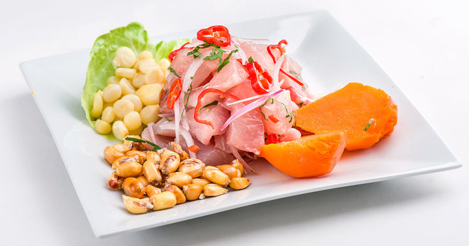
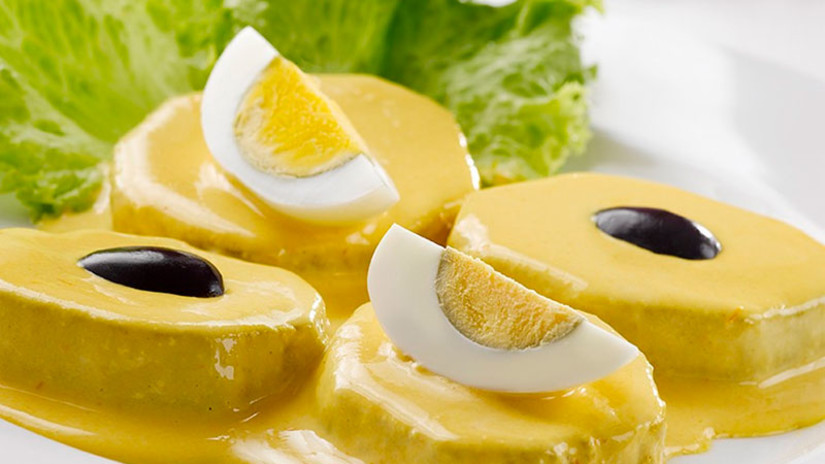
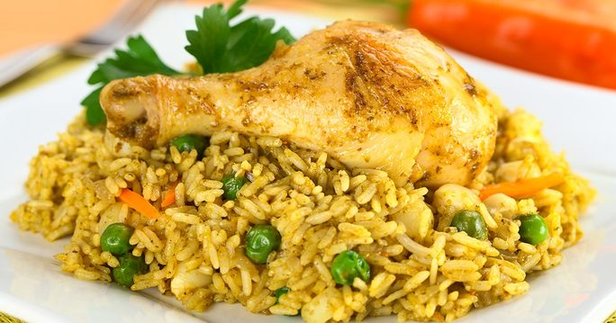
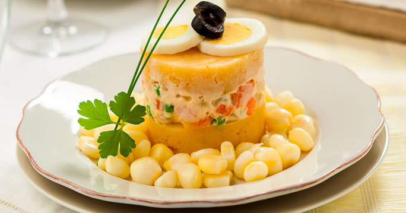

Venha a experimentar a culinária peruana!!! Pedidos :  99968-6160
99968-6160
Ceviche
O ceviche é o prato mais famoso do país, tanto que foi declarado como Patrimônio Cultural. Leva peixe branco cru, cebola roxa, pimenta, coentro, sal e limão (ou lima). Como acompanhamento, costuma-se servir milho, alface e batata doce.
R$ 65.00
Papa a la huancaína
Papas é batatas em espanhol, Huancaína é uma espécie de molho de pimenta amarela, levemente picante. As batatas são cozidas em rodelas e cobertas com esse molho.o prato é servido com ovos cozidos, alface e azeitonas pretas.
R$ 35.00
Arroz con pollo
Receita leva sobrecoxa, ervilha, cenoura, pimentão, coentro, purê de pimenta peruana, arroz, cerveja, preta, caldo do frango, pimenta-do-reino, cominho, cebola, alho em pasta, pasta de pimentão, cebola e tomate.
R$ 55.00
Causa Rellena
Também conhecida como causa limeña, a batata usada no preparo do prato é a variedade amarela, típica do país, mais o nosso conhecido ají amarillo (pimenta amarela, já falamos dela algumas vezes, lembra?) por isso esse amarelo mais forte.